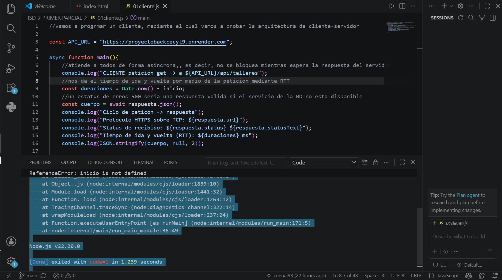

El objetivo de esta práctica fue probar la arquitectura cliente-servidor mediante una petición GET a una API para obtener información de los talleres.

Al ejecutar el código original se presentó un error porque la variable inicio no fue definida.
No se completó la conexión con el servidor. El programa se detuvo antes de realizar correctamente la petición debido al error encontrado en la línea 9.
Se obtuvo el mensaje de error, la línea donde ocurrió el problema, la versión de Node.js utilizada (v22.20.0) y el código de salida 1. No se obtuvo la información de los talleres ni la respuesta JSON del servidor.
La práctica permitió observar cómo un cliente intenta comunicarse con un servidor. En este caso, la comunicación no pudo completarse debido a un error en el código original, específicamente porque la variable inicio no estaba definida.